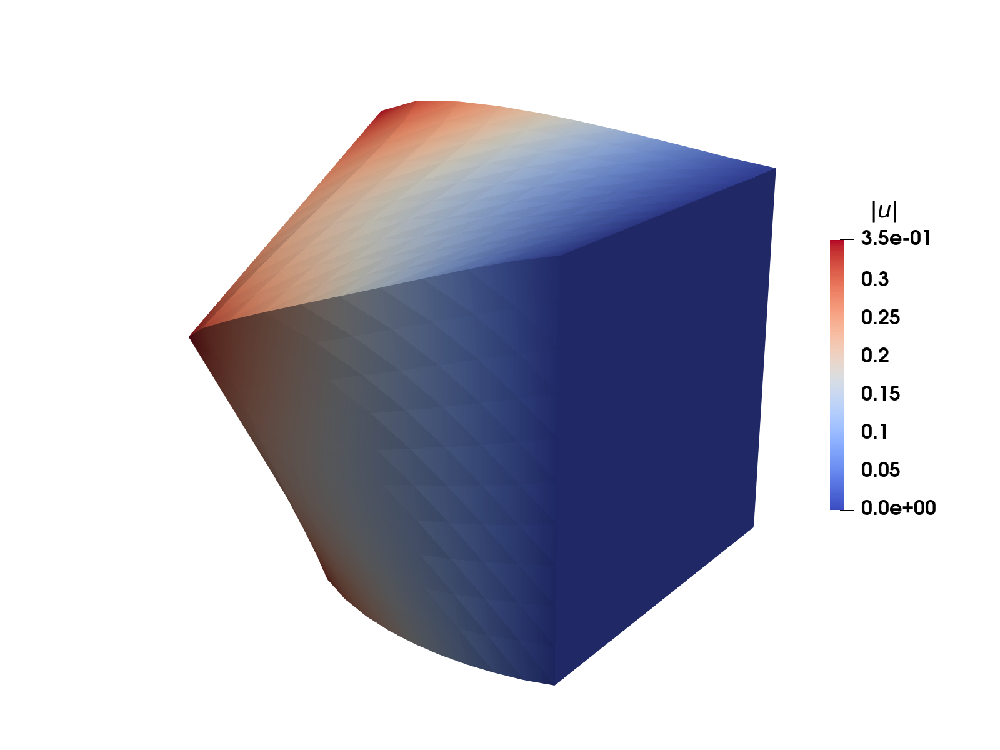
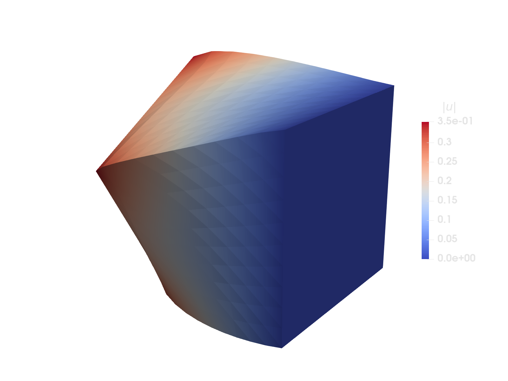

Hyperelasticity
Keywords: hyperelasticity, finite strain, large deformations, Newton's method, conjugate gradient, automatic differentiation


Figure 1: Cube loaded in torsion modeled with a hyperelastic material model and finite strain.
This example is also available as a Jupyter notebook: hyperelasticity.ipynb.
Introduction
In this example we will solve a problem in a finite strain setting using an hyperelastic material model. In order to compute the stress we will use automatic differentiation, to solve the non-linear system we use Newton's method, and for solving the Newton increment we use conjugate gradients.
The weak form is expressed in terms of the first Piola-Kirchoff stress $\mathbf{P}$ as follows: Find $\mathbf{u} \in \mathbb{U}$ such that
\[\int_{\Omega} [\nabla_{\mathbf{X}} \delta \mathbf{u}] : \mathbf{P}(\mathbf{u})\ \mathrm{d}\Omega = \int_{\Omega} \delta \mathbf{u} \cdot \mathbf{b}\ \mathrm{d}\Omega + \int_{\Gamma_\mathrm{N}} \delta \mathbf{u} \cdot \mathbf{t}\ \mathrm{d}\Gamma \quad \forall \delta \mathbf{u} \in \mathbb{U}^0,\]
where $\mathbf{u}$ is the unknown displacement field, $\mathbf{b}$ is the body force acting on the reference domain, $\mathbf{t}$ is the traction acting on the Neumann part of the reference domain's boundary, and where $\mathbb{U}$ and $\mathbb{U}^0$ are suitable trial and test sets. $\Omega$ denotes the reference (sometimes also called initial or material) domain. Gradients are defined with respect to the reference domain, here denoted with an $\mathbf{X}$. Formally this is expressed as $(\nabla_{\mathbf{X}} \bullet)_{ij} := \frac{\partial(\bullet)_i}{\partial X_j}$. Note that for large deformation problems it is also possible that gradients and integrals are defined on the deformed (sometimes also called current or spatial) domain, depending on the specific formulation.
The specific problem we will solve in this example is the cube from Figure 1: On one side we apply a rotation using Dirichlet boundary conditions, on the opposite side we fix the displacement with a homogeneous Dirichlet boundary condition, and on the remaining four sides we apply a traction in the normal direction of the surface. In addition, a body force is applied in one direction.
In addition to Ferrite.jl and Tensors.jl, this examples uses TimerOutputs.jl for timing the program and print a summary at the end, ProgressMeter.jl for showing a simple progress bar, and IterativeSolvers.jl for solving the linear system using conjugate gradients.
using Ferrite, Tensors, TimerOutputs, ProgressMeter, IterativeSolversHyperelastic material model
The stress can be derived from an energy potential, defined in terms of the right Cauchy-Green tensor $\mathbf{C} = \mathbf{F}^{\mathrm{T}} \cdot \mathbf{F}$, where $\mathbf{F} = \mathbf{I} + \nabla_{\mathbf{X}} \mathbf{u}$ is the deformation gradient. We shall use the compressible neo-Hookean model from Wikipedia with the potential
\[\Psi(\mathbf{C}) = \underbrace{\frac{\mu}{2} (I_1 - 3)}_{W(\mathbf{C})} \underbrace{- {\mu} \ln(J) + \frac{\lambda}{2} (J - 1)^2}_{U(J)},\]
where $I_1 = \mathrm{tr}(\mathbf{C})$ is the first invariant, $J = \sqrt{\det(\mathbf{C})}$ and $\mu$ and $\lambda$ material parameters.
Extra details on compressible neo-Hookean formulations
The Neo-Hooke model is only a well defined terminology in the incompressible case. Thus, only $W(\mathbf{C})$ specifies the neo-Hookean behavior, the volume penalty $U(J)$ can vary in different formulations. In order to obtain a well-posed problem, it is crucial to choose a convex formulation of $U(J)$. Other examples for $U(J)$ can be found, e.g. in [1, Eq. (6.138)]
\[ \beta^{-2} (\beta \ln J + J^{-\beta} -1)\]
where [2, Eq. (2.37)] published a non-generalized version with $\beta=-2$. This shows the possible variety of $U(J)$ while all of them refer to compressible neo-Hookean models. Sometimes the modified first invariant $\overline{I}_1=\frac{I_1}{I_3^{1/3}}$ is used in $W(\mathbf{C})$ instead of $I_1$.
From the potential we obtain the second Piola-Kirchoff stress $\mathbf{S}$ as
\[\mathbf{S} = 2 \frac{\partial \Psi}{\partial \mathbf{C}},\]
and the tangent of $\mathbf{S}$ as
\[\frac{\partial \mathbf{S}}{\partial \mathbf{C}} = 2 \frac{\partial^2 \Psi}{\partial \mathbf{C}^2}.\]
Finally, for the finite element problem we need $\mathbf{P}$ and $\frac{\partial \mathbf{P}}{\partial \mathbf{F}}$, which can be obtained by using the following relations:
\[\begin{align*} \mathbf{P} &= \mathbf{F} \cdot \mathbf{S},\\ \frac{\partial \mathbf{P}}{\partial \mathbf{F}} &= \mathbf{I} \bar{\otimes} \mathbf{S} + 2\, \mathbf{F} \cdot \frac{\partial \mathbf{S}}{\partial \mathbf{C}} : \mathbf{F}^\mathrm{T} \bar{\otimes} \mathbf{I}. \end{align*}\]
Derivation of $\partial \mathbf{P} / \partial \mathbf{F}$
Tip: See knutam.github.io/tensors for an explanation of the index notation used in this derivation.
Using the product rule, the chain rule, and the relations $\mathbf{P} = \mathbf{F} \cdot \mathbf{S}$ and $\mathbf{C} = \mathbf{F}^\mathrm{T} \cdot \mathbf{F}$, we obtain the following:
\[\begin{aligned} \frac{\partial P_{ij}}{\partial F_{kl}} &= \frac{\partial (F_{im}S_{mj})}{\partial F_{kl}} \\ &= \frac{\partial F_{im}}{\partial F_{kl}}S_{mj} + F_{im}\frac{\partial S_{mj}}{\partial F_{kl}} \\ &= \delta_{ik}\delta_{ml} S_{mj} + F_{im}\frac{\partial S_{mj}}{\partial C_{no}}\frac{\partial C_{no}}{\partial F_{kl}} \\ &= \delta_{ik}S_{lj} + F_{im}\frac{\partial S_{mj}}{\partial C_{no}} \frac{\partial (F^\mathrm{T}_{np}F_{po})}{\partial F_{kl}} \\ &= \delta_{ik}S^\mathrm{T}_{jl} + F_{im}\frac{\partial S_{mj}}{\partial C_{no}} \left( \frac{\partial F^\mathrm{T}_{np}}{\partial F_{kl}}F_{po} + F^\mathrm{T}_{np}\frac{\partial F_{po}}{\partial F_{kl}} \right) \\ &= \delta_{ik}S_{jl} + F_{im}\frac{\partial S_{mj}}{\partial C_{no}} (\delta_{nl} \delta_{pk} F_{po} + F^\mathrm{T}_{np}\delta_{pk} \delta_{ol}) \\ &= \delta_{ik}S_{lj} + F_{im}\frac{\partial S_{mj}}{\partial C_{no}} (F^\mathrm{T}_{ok} \delta_{nl} + F^\mathrm{T}_{nk} \delta_{ol}) \\ &= \delta_{ik}S_{jl} + 2\, F_{im} \frac{\partial S_{mj}}{\partial C_{no}} F^\mathrm{T}_{nk} \delta_{ol} \\ \frac{\partial \mathbf{P}}{\partial \mathbf{F}} &= \mathbf{I}\bar{\otimes}\mathbf{S} + 2\, \mathbf{F} \cdot \frac{\partial \mathbf{S}}{\partial \mathbf{C}} : \mathbf{F}^\mathrm{T} \bar{\otimes} \mathbf{I}, \end{aligned}\]
where we used the fact that $\mathbf{S}$ is symmetric ($S_{lj} = S_{jl}$) and that $\frac{\partial \mathbf{S}}{\partial \mathbf{C}}$ is minor symmetric ($\frac{\partial S_{mj}}{\partial C_{no}} = \frac{\partial S_{mj}}{\partial C_{on}}$).
Implementation of material model using automatic differentiation
We can implement the material model as follows, where we utilize automatic differentiation for the stress and the tangent, and thus only define the potential:
struct NeoHooke μ::Float64 λ::Float64endfunction Ψ(C, mp::NeoHooke) μ = mp.μ λ = mp.λ Ic = tr(C) J = sqrt(det(C)) return μ / 2 * (Ic - 3 - 2 * log(J)) + λ / 2 * (J - 1)^2endfunction constitutive_driver(C, mp::NeoHooke) # Compute all derivatives in one function call ∂²Ψ∂C², ∂Ψ∂C = Tensors.hessian(y -> Ψ(y, mp), C, :all) S = 2.0 * ∂Ψ∂C ∂S∂C = 2.0 * ∂²Ψ∂C² return S, ∂S∂Cend;Newton's method
As mentioned above, to deal with the non-linear weak form we first linearize the problem such that we can apply Newton's method, and then apply the FEM to discretize the problem. Skipping a detailed derivation, Newton's method can be expressed as: Given some initial guess for the degrees of freedom $\underline{u}^0$, find a sequence $\underline{u}^{k}$ by iterating
\[\underline{u}^{k+1} = \underline{u}^{k} - \Delta \underline{u}^{k}\]
until some termination condition has been met. Therein we determine $\Delta \underline{u}^{k}$ from the linearized problem
\[\underline{\underline{K}}(\underline{u}^{k}) \Delta \underline{u}^{k} = \underline{g}(\underline{u}^{k})\]
where the global residual, $\underline{g}$, and the Jacobi matrix, $\underline{\underline{K}} = \frac{\partial \underline{g}}{\partial \underline{u}}$, are evaluated at the current guess $\underline{u}^k$. The entries of $\underline{g}$ are given by
\[(\underline{g})_{i} = \int_{\Omega} [\nabla_{\mathbf{X}} \delta \mathbf{u}_{i}] : \mathbf{P} \, \mathrm{d} \Omega - \int_{\Omega} \delta \mathbf{u}_{i} \cdot \mathbf{b} \, \mathrm{d} \Omega - \int_{\Gamma_\mathrm{N}} \delta \mathbf{u}_i \cdot \mathbf{t}\ \mathrm{d}\Gamma,\]
and the entries of $\underline{\underline{K}}$ are given by
\[(\underline{\underline{K}})_{ij} = \int_{\Omega} [\nabla_{\mathbf{X}} \delta \mathbf{u}_{i}] : \frac{\partial \mathbf{P}}{\partial \mathbf{F}} : [\nabla_{\mathbf{X}} \delta \mathbf{u}_{j}] \, \mathrm{d} \Omega.\]
A detailed derivation can be found in every continuum mechanics book, which has a chapter about finite elasticity theory. We used "Nonlinear solid mechanics: a continuum approach for engineering science." by Holzapfel [1], Chapter 8 as a reference.
Finite element assembly
The element routine for assembling the residual and tangent stiffness is implemented as usual, with loops over quadrature points and shape functions:
function assemble_element!(ke, ge, cell, cv, fv, mp, ue, ΓN) # Reinitialize cell values reinit!(cv, cell) b = Vec{3}((0.0, -0.5, 0.0)) # Body force tn = 0.1 # Traction (to be scaled with surface normal) ndofs = getnbasefunctions(cv) for qp in 1:getnquadpoints(cv) dΩ = getdetJdV(cv, qp) # Compute deformation gradient F and right Cauchy-Green tensor C ∇u = function_gradient(cv, qp, ue) F = one(∇u) + ∇u C = tdot(F) # F' ⋅ F # Compute stress and tangent S, ∂S∂C = constitutive_driver(C, mp) P = F ⋅ S I = one(S) ∂P∂F = otimesu(I, S) + 2 * F ⋅ ∂S∂C ⊡ otimesu(F', I) # Loop over test functions for i in 1:ndofs # Test function and gradient δui = shape_value(cv, qp, i) ∇δui = shape_gradient(cv, qp, i) # Add contribution to the residual from this test function ge[i] += (∇δui ⊡ P - δui ⋅ b) * dΩ ∇δui∂P∂F = ∇δui ⊡ ∂P∂F # Hoisted computation for j in 1:ndofs ∇δuj = shape_gradient(cv, qp, j) # Add contribution to the tangent ke[i, j] += (∇δui∂P∂F ⊡ ∇δuj) * dΩ end end end # Surface integral for the traction for facet in 1:nfacets(cell) if (cellid(cell), facet) in ΓN reinit!(fv, cell, facet) for q_point in 1:getnquadpoints(fv) t = tn * getnormal(fv, q_point) dΓ = getdetJdV(fv, q_point) for i in 1:ndofs δui = shape_value(fv, q_point, i) ge[i] -= (δui ⋅ t) * dΓ end end end end returnend;Assembling global residual and tangent is also done in the usual way, just looping over the elements, call the element routine and assemble into the global matrix K and residual g.
function assemble_global!(K, g, dh, cv, fv, mp, u, ΓN) n = ndofs_per_cell(dh) ke = zeros(n, n) ge = zeros(n) ue = zeros(n) # start_assemble resets K and g assembler = start_assemble(K, g) # Loop over all cells in the grid @timeit "assemble" for cell in CellIterator(dh) global_dofs = celldofs(cell) ue .= @view u[global_dofs] # element dofs fill!(ke, 0.0) fill!(ge, 0.0) @timeit "element assemble" assemble_element!(ke, ge, cell, cv, fv, mp, ue, ΓN) assemble!(assembler, global_dofs, ke, ge) end returnend;Finally, we define a main function which sets up everything and then performs Newton iterations until convergence.
function solve() reset_timer!() # Generate a grid N = 10 L = 1.0 left = zero(Vec{3}) right = L * ones(Vec{3}) grid = generate_grid(Tetrahedron, (N, N, N), left, right) # Material parameters E = 10.0 ν = 0.3 μ = E / (2(1 + ν)) λ = (E * ν) / ((1 + ν) * (1 - 2ν)) mp = NeoHooke(μ, λ) # Finite element base ip = Lagrange{RefTetrahedron, 1}()^3 qr = QuadratureRule{RefTetrahedron}(1) qr_facet = FacetQuadratureRule{RefTetrahedron}(1) cv = CellValues(qr, ip) fv = FacetValues(qr_facet, ip) # DofHandler dh = DofHandler(grid) add!(dh, :u, ip) # Add a displacement field close!(dh) function rotation(X, t) θ = pi / 3 # 60° x, y, z = X return t * Vec{3}( ( 0.0, L / 2 - y + (y - L / 2) * cos(θ) - (z - L / 2) * sin(θ), L / 2 - z + (y - L / 2) * sin(θ) + (z - L / 2) * cos(θ), ) ) end dbcs = ConstraintHandler(dh) # Add a homogeneous boundary condition (fully fixed) on the "right" boundary dbc = Dirichlet(:u, getfacetset(grid, "right"), (x, t) -> [0.0, 0.0, 0.0], [1, 2, 3]) add!(dbcs, dbc) dbc = Dirichlet(:u, getfacetset(grid, "left"), (x, t) -> rotation(x, t), [1, 2, 3]) add!(dbcs, dbc) close!(dbcs) t = 0.5 Ferrite.update!(dbcs, t) # Neumann part of the boundary ΓN = union( getfacetset(grid, "top"), getfacetset(grid, "bottom"), getfacetset(grid, "front"), getfacetset(grid, "back"), ) # Pre-allocation of vectors for the solution and Newton increments _ndofs = ndofs(dh) un = zeros(_ndofs) # previous solution vector u = zeros(_ndofs) Δu = zeros(_ndofs) ΔΔu = zeros(_ndofs) apply!(un, dbcs) # Create sparse matrix and residual vector K = allocate_matrix(dh) g = zeros(_ndofs) # Perform Newton iterations newton_itr = -1 NEWTON_TOL = 1.0e-8 NEWTON_MAXITER = 30 prog = ProgressMeter.ProgressThresh(NEWTON_TOL; desc = "Solving:") while true newton_itr += 1 # Construct the current guess u .= un .+ Δu # Compute residual and tangent for current guess assemble_global!(K, g, dh, cv, fv, mp, u, ΓN) # Apply boundary conditions apply_zero!(K, g, dbcs) # Compute the residual norm and compare with tolerance normg = norm(g) ProgressMeter.update!(prog, normg; showvalues = [(:iter, newton_itr)]) if normg < NEWTON_TOL break elseif newton_itr > NEWTON_MAXITER error("Reached maximum Newton iterations, aborting") end # Compute increment using conjugate gradients @timeit "linear solve" IterativeSolvers.cg!(ΔΔu, K, g; maxiter = 1000) apply_zero!(ΔΔu, dbcs) Δu .-= ΔΔu end # Save the solution @timeit "export" begin VTKGridFile("hyperelasticity", dh) do vtk write_solution(vtk, dh, u) end end print_timer(title = "Analysis with $(getncells(grid)) elements", linechars = :ascii) return uendsolve (generic function with 1 method)Run the simulation
u = solve();
Solving: (thresh = 1e-08, value = 0.000259699)
iter: 3
Solving: Time: 0:00:00 (6 iterations)
iter: 5
-------------------------------------------------------------------------------
Analysis with 6000 elements Time Allocations
----------------------- ------------------------
Tot / % measured: 322ms / 58.3% 18.7MiB / 29.2%
Section ncalls time %tot avg alloc %tot avg
-------------------------------------------------------------------------------
assemble 6 101ms 53.6% 16.8ms 4.97KiB 0.1% 848B
element assemble 36.0k 70.6ms 37.6% 1.96μs 0.00B 0.0% 0.00B
linear solve 5 73.5ms 39.1% 14.7ms 473KiB 8.5% 94.6KiB
export 1 13.7ms 7.3% 13.7ms 4.98MiB 91.4% 4.98MiB
-------------------------------------------------------------------------------Plain program
Here follows a version of the program without any comments. The file is also available here: hyperelasticity.jl.
using Ferrite, Tensors, TimerOutputs, ProgressMeter, IterativeSolversstruct NeoHooke μ::Float64 λ::Float64endfunction Ψ(C, mp::NeoHooke) μ = mp.μ λ = mp.λ Ic = tr(C) J = sqrt(det(C)) return μ / 2 * (Ic - 3 - 2 * log(J)) + λ / 2 * (J - 1)^2endfunction constitutive_driver(C, mp::NeoHooke) # Compute all derivatives in one function call ∂²Ψ∂C², ∂Ψ∂C = Tensors.hessian(y -> Ψ(y, mp), C, :all) S = 2.0 * ∂Ψ∂C ∂S∂C = 2.0 * ∂²Ψ∂C² return S, ∂S∂Cend;function assemble_element!(ke, ge, cell, cv, fv, mp, ue, ΓN) # Reinitialize cell values reinit!(cv, cell) b = Vec{3}((0.0, -0.5, 0.0)) # Body force tn = 0.1 # Traction (to be scaled with surface normal) ndofs = getnbasefunctions(cv) for qp in 1:getnquadpoints(cv) dΩ = getdetJdV(cv, qp) # Compute deformation gradient F and right Cauchy-Green tensor C ∇u = function_gradient(cv, qp, ue) F = one(∇u) + ∇u C = tdot(F) # F' ⋅ F # Compute stress and tangent S, ∂S∂C = constitutive_driver(C, mp) P = F ⋅ S I = one(S) ∂P∂F = otimesu(I, S) + 2 * F ⋅ ∂S∂C ⊡ otimesu(F', I) # Loop over test functions for i in 1:ndofs # Test function and gradient δui = shape_value(cv, qp, i) ∇δui = shape_gradient(cv, qp, i) # Add contribution to the residual from this test function ge[i] += (∇δui ⊡ P - δui ⋅ b) * dΩ ∇δui∂P∂F = ∇δui ⊡ ∂P∂F # Hoisted computation for j in 1:ndofs ∇δuj = shape_gradient(cv, qp, j) # Add contribution to the tangent ke[i, j] += (∇δui∂P∂F ⊡ ∇δuj) * dΩ end end end # Surface integral for the traction for facet in 1:nfacets(cell) if (cellid(cell), facet) in ΓN reinit!(fv, cell, facet) for q_point in 1:getnquadpoints(fv) t = tn * getnormal(fv, q_point) dΓ = getdetJdV(fv, q_point) for i in 1:ndofs δui = shape_value(fv, q_point, i) ge[i] -= (δui ⋅ t) * dΓ end end end end returnend;function assemble_global!(K, g, dh, cv, fv, mp, u, ΓN) n = ndofs_per_cell(dh) ke = zeros(n, n) ge = zeros(n) ue = zeros(n) # start_assemble resets K and g assembler = start_assemble(K, g) # Loop over all cells in the grid @timeit "assemble" for cell in CellIterator(dh) global_dofs = celldofs(cell) ue .= @view u[global_dofs] # element dofs fill!(ke, 0.0) fill!(ge, 0.0) @timeit "element assemble" assemble_element!(ke, ge, cell, cv, fv, mp, ue, ΓN) assemble!(assembler, global_dofs, ke, ge) end returnend;function solve() reset_timer!() # Generate a grid N = 10 L = 1.0 left = zero(Vec{3}) right = L * ones(Vec{3}) grid = generate_grid(Tetrahedron, (N, N, N), left, right) # Material parameters E = 10.0 ν = 0.3 μ = E / (2(1 + ν)) λ = (E * ν) / ((1 + ν) * (1 - 2ν)) mp = NeoHooke(μ, λ) # Finite element base ip = Lagrange{RefTetrahedron, 1}()^3 qr = QuadratureRule{RefTetrahedron}(1) qr_facet = FacetQuadratureRule{RefTetrahedron}(1) cv = CellValues(qr, ip) fv = FacetValues(qr_facet, ip) # DofHandler dh = DofHandler(grid) add!(dh, :u, ip) # Add a displacement field close!(dh) function rotation(X, t) θ = pi / 3 # 60° x, y, z = X return t * Vec{3}( ( 0.0, L / 2 - y + (y - L / 2) * cos(θ) - (z - L / 2) * sin(θ), L / 2 - z + (y - L / 2) * sin(θ) + (z - L / 2) * cos(θ), ) ) end dbcs = ConstraintHandler(dh) # Add a homogeneous boundary condition (fully fixed) on the "right" boundary dbc = Dirichlet(:u, getfacetset(grid, "right"), (x, t) -> [0.0, 0.0, 0.0], [1, 2, 3]) add!(dbcs, dbc) dbc = Dirichlet(:u, getfacetset(grid, "left"), (x, t) -> rotation(x, t), [1, 2, 3]) add!(dbcs, dbc) close!(dbcs) t = 0.5 Ferrite.update!(dbcs, t) # Neumann part of the boundary ΓN = union( getfacetset(grid, "top"), getfacetset(grid, "bottom"), getfacetset(grid, "front"), getfacetset(grid, "back"), ) # Pre-allocation of vectors for the solution and Newton increments _ndofs = ndofs(dh) un = zeros(_ndofs) # previous solution vector u = zeros(_ndofs) Δu = zeros(_ndofs) ΔΔu = zeros(_ndofs) apply!(un, dbcs) # Create sparse matrix and residual vector K = allocate_matrix(dh) g = zeros(_ndofs) # Perform Newton iterations newton_itr = -1 NEWTON_TOL = 1.0e-8 NEWTON_MAXITER = 30 prog = ProgressMeter.ProgressThresh(NEWTON_TOL; desc = "Solving:") while true newton_itr += 1 # Construct the current guess u .= un .+ Δu # Compute residual and tangent for current guess assemble_global!(K, g, dh, cv, fv, mp, u, ΓN) # Apply boundary conditions apply_zero!(K, g, dbcs) # Compute the residual norm and compare with tolerance normg = norm(g) ProgressMeter.update!(prog, normg; showvalues = [(:iter, newton_itr)]) if normg < NEWTON_TOL break elseif newton_itr > NEWTON_MAXITER error("Reached maximum Newton iterations, aborting") end # Compute increment using conjugate gradients @timeit "linear solve" IterativeSolvers.cg!(ΔΔu, K, g; maxiter = 1000) apply_zero!(ΔΔu, dbcs) Δu .-= ΔΔu end # Save the solution @timeit "export" begin VTKGridFile("hyperelasticity", dh) do vtk write_solution(vtk, dh, u) end end print_timer(title = "Analysis with $(getncells(grid)) elements", linechars = :ascii) return uendu = solve();This page was generated using Literate.jl.